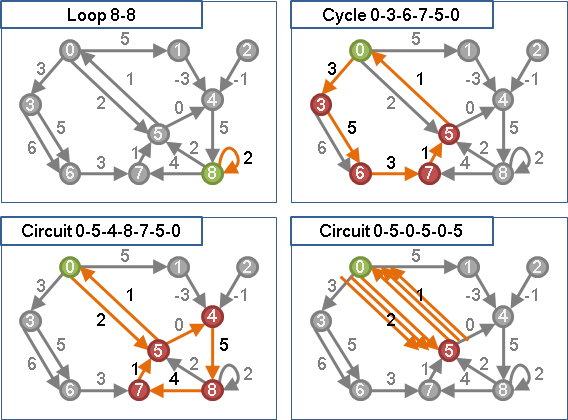

Cycle
程度★ 難度★
Cycle
一條路徑的起點和終點相同，就是一只「環」。
有向圖的環，可以特地稱作「有向環」；無向圖的環，可以特地稱作「無向環」。環上每個點都恰好連著兩條邊。
無向環以另一種角度來看，就是兩條路徑，兩條路徑的起點相同、終點也相同。
習慣規定一個環至少三個點。
Loop
一個點連向自己的邊，稱做「自環」，有時候可以歸類為環。
Negative Weight Cycle
程度★★ 難度★
Negative Weight Cycle
權重為負值的環稱作「負環」。Bellman-Ford Algorithm可以求出其中一只負環。
Minimum Weight Cycle
程度★★ 難度★★★
Minimum Weight Cycle（Shortest Cycle）（Girth）
「最小環」是一張圖上權重最小的環，可能有許多只。
當圖上無負環時，得以多項式時間找出其中一個最小環，此時最小環是簡單環。當圖上有負環時，無法快速找出最小環，為NP-Complete問題。
求最小環如同求最短路徑；求最大環如同求最長路徑。
演算法
窮舉圖上每一個點： 甲、以該點為起點，以邊的連接關係進行backtracking。 乙、途中若形成環，則隨時紀錄最小環。 丙、可以bound。
時間複雜度是O(V!)，不過實際效率尚可接受。
演算法
窮舉所有圖上的邊ij： 甲、把邊ij暫時拿掉，權重改成無限大。 乙、求出i點到j點的最短路徑。 丙、放回邊ij，形成一只環，即是強制經過邊ij的最小環。 丁、過程中權重最小者即是最小環。
時間複雜度等同於求O(E)次兩點之間最短路徑的時間。
演算法
藉由Floyd-Warshall Algorithm的過程，順手窮舉所有可能的最小環。有使用限制。
時間複雜度為O(V^3)，空間複雜度為O(V^3)。
有向圖，正邊 O(VVV) 有向圖，無負環 O(VVV) 有向圖，有負環 不行算 無向圖，正邊 O(VVV) 無向圖，無負環 不行算 無向圖，有負環 不行算
計算最小環的權重
找出一只最小環
若要維持時間複雜度為O(V^3)，則必須增廣陣列空間成為O(V^3)，紀錄整個計算過程；最後仿照求一條最短路徑的模式，以回溯方式求得一只最小環。
O(V^3)的做法實際效率不佳。下面提供比較簡潔、效率較佳的實作方式，時間複雜度是O(V^4)，空間複雜度是O(V^2)。
Timus 1004
Minimum Ratio Cycle
程度★★ 難度★★
Minimum Ratio Cycle
「最小比率環」。一張圖每條邊有兩組權重，第一組權重可為任意值，第二組權重不可為負值；於是一只環也有兩組權重。最小比率環是「第一組權重除以第二組權重」最小的環，可能有許多只。
已被證明是NP-hard問題。
第一個想法：搜尋答案
找出圖上所有的環，比較各個環的比率之後，就得到最小比率環了。然而，要找出圖上所有的環，是不容易的事情。
逆向思考，直接搜尋比率，再來看圖上有哪些環符合比率吧！
第二個想法：除法化作減法
令邊的兩組權重標記為w1和w2，環的兩組權重標記為Σw1和Σw2，環的比率標記為r = Σw1÷Σw2。
我們想知道一只環的比率r是多少，也就是說我們想知道Σw1÷Σw2是多少，也就是說我們想知道Σw1會等於多少的r×Σw2──要是直接把Σw1與r×Σw2相減，亦可表示Σw1與r×Σw2的多寡關係：r太小就表示差值是正數，r剛剛好就表示差值是零，r太大就表示差值是負數。利用這種方式，原本難以分析的除法式子，就成了容易分析的減法式子了。
為了湊出這道減法式子，把原來權重為w1和w2的一條邊，改為權重為w1 - r×w2的一條邊。如此一來，環的權重就變成了Σ(w1 - r×w2) = Σw1 - r×Σw2，這就成了我們所要的減法式子。
現在只要設定好r，然後看看圖上有沒有零環，如果有零環就表示這個r是合理的比率值。新圖上的零環，就是原圖上比例為r的環。
新圖的權重 v.s. 原圖的比率
設定好r之後，新圖上究竟有哪些環？
一、如果新圖上有負環：這個負環的權重Σ(w1 - r×w2) = Σw1 - r×Σw2 < 0，可推得Σw1÷Σw2 < r。也就是說找到了一個負環，比率比r還小。
二、如果新圖上沒有負環，但有零環：可推得Σw1÷Σw2 = r。由於圖上沒有負環，沒有比率比r小的環，所以這個零環就是最小比率環，r就是最小比率環的比率。
三、新圖上沒有負環、沒有零環，但有正環：可推得Σw1÷Σw2 > r。也就是說圖上所有的環，比率都比r還大。
四、新圖上沒有環：沒有環就不會有最小比率環。
至此，這個問題已變成搜尋最小比率環的比率，並判斷圖上有沒有負環的問題了。要判斷圖上有沒有負環，可以利用各種偵測負環的演算法，例如Bellman-Ford Algorithm。
Binary Search
比率太小就有負環，比率太大就沒有負環。所以可以用Binary Search找答案。
演算法
1. 搜尋最小比率環的比率r。 2. 把圖上的邊的兩組權重w1和w2，改為只有一組權重w1-r×w2， X. 可使用Binary Search找出正確的比率r： 圖上有負環表示r太小，圖上沒負環表示r太大， 沒有負環只有零環表示r是正解。
時間複雜度等同於偵測負環O(logR)次的時間，R是可能的比率範圍。
計算最小比率環的比率
【待補程式碼】
找出一只最小比率環
【待補程式碼】
Minimum Mean Cycle
程度★★ 難度★★
Minimum Mean Cycle
尚無中譯，暫譯「最小平均值環」。一張圖上每條邊都有權重，最小平均值環是「權重除以邊數」最小的環，可能有許多只。
最小平均值環也可以視作是最小比率環的特例，當每條邊的第二組權重都等於1的時候。
有向圖演算法（Karp's Algorithm）
請參考CLRS在Bellman-Ford Algorithm章節的練習題，事實上也能求出最大平均值環。用到了兩個概念：
一、圖上所有邊的權重，同時增減一數值，不影響最小平均值環的位置（但是會影響最小環的位置）。
二、單源最短路徑往外延伸，一旦碰觸到最小平均值環（或者最小環），就會不斷繞行之，讓路徑長度增加最少。此演算法採用窮舉法，求出單源最短路徑進入最小平均值環的起點。
令V為圖上的所有點構成的集合，n為圖上的點數。
圖上任意取一個點作為起點，d(k, i)為起點走k條邊到達i點的最短路徑。
d(n, i) - d(k, i)
平均權重 = min max ———————————————————
i∊V 0≤k≤n-1 n - k
如果圖不連通，可以使用Johnson's Algorithm提到的技巧，新增一個起點，新增起點到圖上各點的邊，權重皆設為相同數值（例如零）。如此一來，圖上每一點都可以由起點走到，而且不影響最小平均值環的位置。
圖的資料結構為adjacency matrix，時間複雜度是O(V^3)；圖的資料結構為adjacency lists，時間複雜度是O(VE)。
計算最小平均值環的平均權重（adjacency matrix）
找出一只最小平均值環
【待補程式碼】
UVa 11090